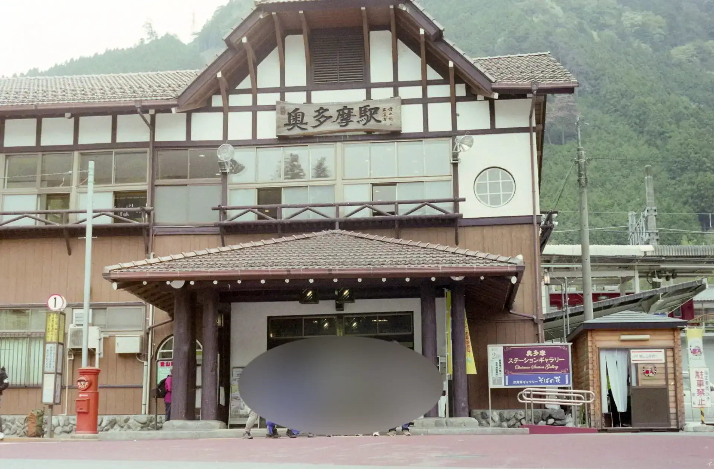
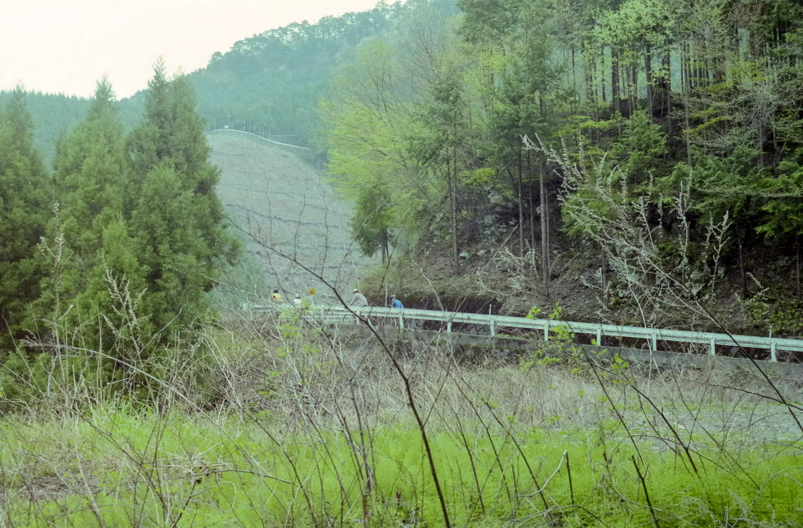
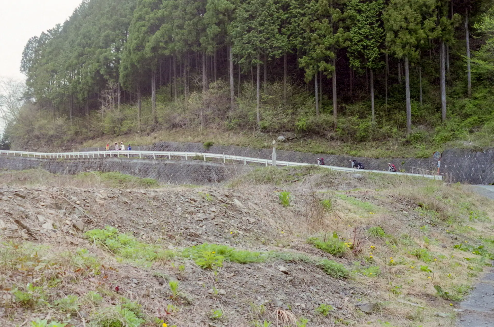
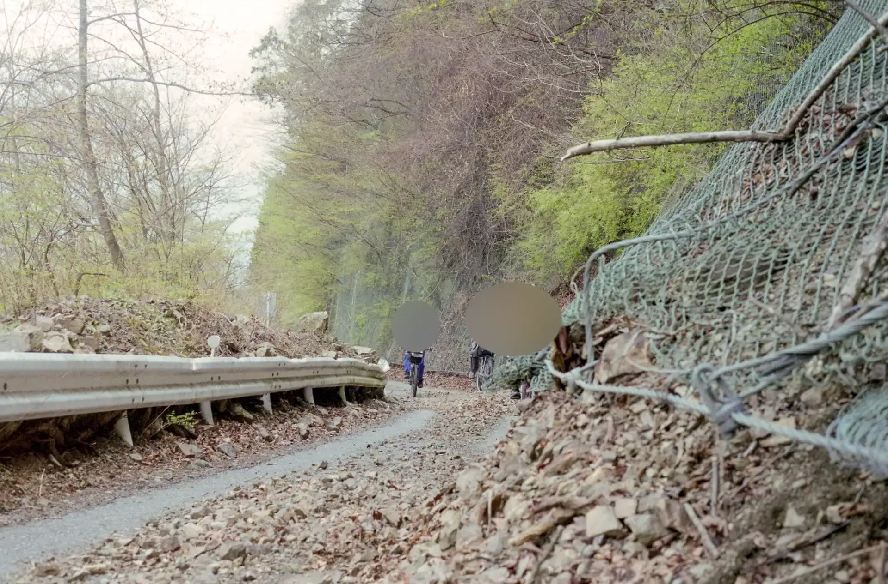
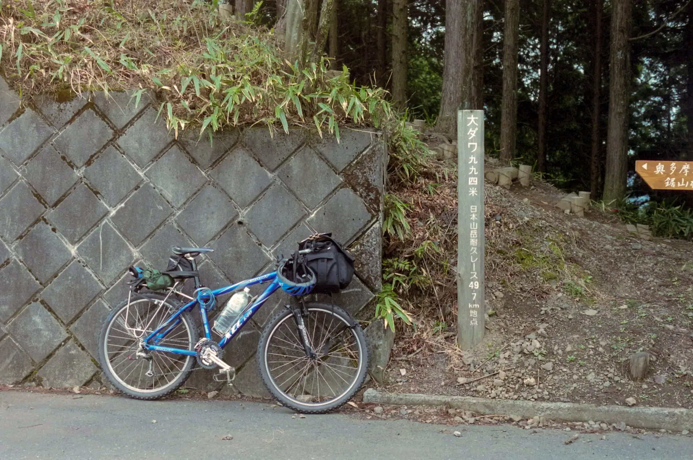
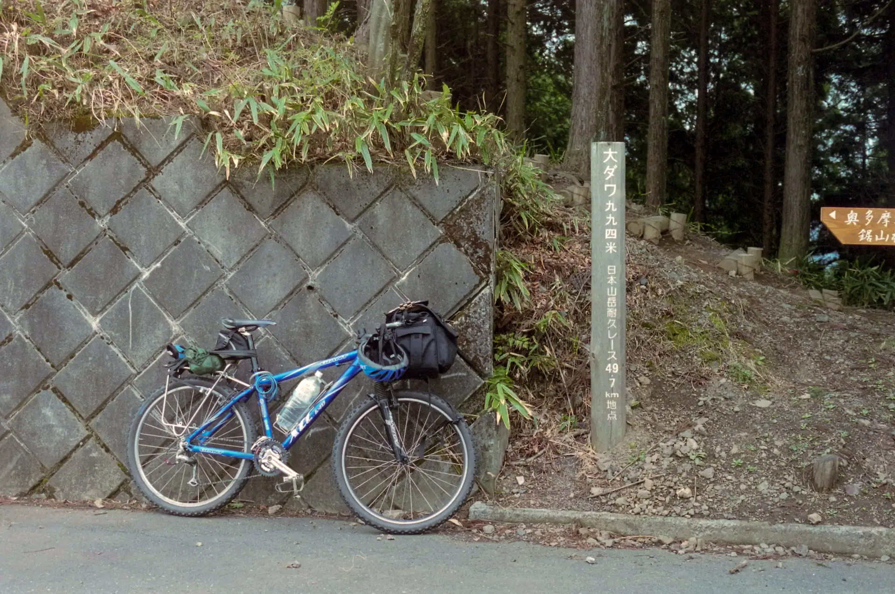
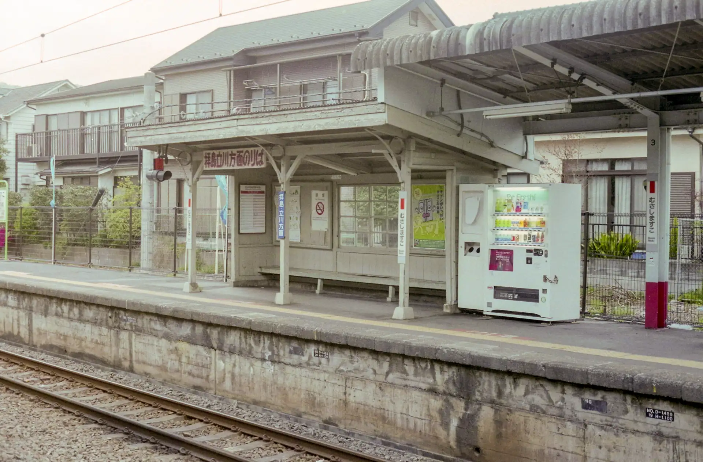

2006年4月23日？ 奥多摩 鋸山林道（大ダワ）自転車ツーリング
2006年、大学サイクリングクラブの新歓で1年生を連れて東京の奥多摩にある鋸山林道（大ダワ）に行った。
鋸山林道は定番のルートだが、じつは自分はこの一度しか行ったことがない。
使用カメラは、PENTAX LX + TEFNON 28mm F2.8だと思われる。
厳密な日付は不明だが、当時のカレンダーを見るにおそらく2006年4月23日 日曜日だと思われる。
朝、青梅線の奥多摩駅に集合。
鋸山林道へ。

遠景に他の部員が写っている写真を貼っていく。
 こうしてみると結構崩れている。
鋸山林道の峠「大ダワ」に着いた。標高994m。
 

秋川側へ下り、五日市線の武蔵増戸駅で解散。
ほかにも2006年の新歓合宿の写真もあるはずなのだが、データが行方不明。
2026年1月18日記事公開